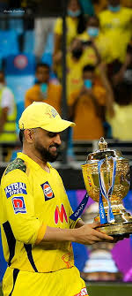

<DHONI

Dhoni’s passion for motorcycles that truly sets him apart. Renowned for his love of bikes, he owns an impressive collection of at least 70 bikes that includes iconic models like the Harley-Davidson Fat Boy worth Rs 24.49 lakh, Confederate Hellcat X132 worth Rs 47 lakh, Ducati 1098 worth 35 lakh, and Kawasaki Ninja H2 worth Rs 32.95 lakh. Each of these machines not only represents Dhoni’s affinity for speed but also serves as a testament to his refined taste in automotive craftsmanship.
MS Dhoni: Cricket Records
Test Cricket
1- In 2009, under Dhoni's captaincy, India topped the ICC Test Cricket rankings for the first time.
2- He is the most celebrated Indian Test Captain with 27 Test wins.
3- He has 15 overseas Test defeats, the most by an Indian captain.
4- He became the first Indian wicket-keeper to complete 4,000 test runs.
5- Dhoni scored 224 against Australia. This is the highest score by a wicket-keeper–captain and the third-highest score by an Indian Captain.
6- His maiden century against Pakistan is the fastest century to date scored by an Indian wicket-keeper and fourth overall.
T20I Cricket
1- He holds the record of most wins as a Captain-- 41. T20I Cricket
1- He holds the record of playing most International matches as a Captain-- 332.
2- He is the first and only wicket-keeper to date to effect 150 stumping dismissals across the three forms of the game-- 1
2- He played most matches as a captain and wicket-keeper-- 72.
3- He played most consecutive T20I innings without a duck-- 84.
4- Dhoni played the most T20I innings-- 76.
5- He holds the record of most dismissals as wicket-keeper in T20Is-- 87.
6- He holds the record of most catches by a wicket-keeper in T20Is-- 54.
7- He holds the record of most stumpings as a wicket-keeper in T20Is-- 33.
8- He holds the record of most catches as wicketkeeper in a T20I inning-- 5.
Combined records
1- He holds the record of playing most International matches as a Captain-- 332.
2- He is the first and only wicket-keeper to date to effect 150 stumping dismissals across the three forms of the game-- 161.
7- Dhoni completed 50 sixes as a captain.
S Dhoni: In other fields
S Dhoni: In other fields
Ownerships
1- MS Dhoni is the co-owner of Ranchi Rays (Ranchi-based Hockey Club) along with Sahara India Pariwar. Ranchi Rays is a franchise of the Hockey India League.
2- Along with Abhishek Bachchan and Vita Dani, MS Dhoni is the co-owner of Chennaiyin FC (Chennai-based football club). It is a franchise of the Indian Super League.
3- Along with Akkineni Nagarjuna, Dhoni is the co-owner of the Supersport World Championship team, Mahi Racing Team India.
Business
In February 2016, Dhoni launched his brand 'SEVEN'. He owns the footwear of the brand is the brand ambassador of his company.
Production House
MS Dhoni has a production house named 'Dhoni Entertainment'. The first show produced under this banner was a documentary web series premiered on Hotstar-- Roar of the Lion. The series had MS Dhoni himself in the lead role. He will soon make his on-screen appearance in the upcoming web series Atharva: The Origin as Atharva.
Territorial Army
In 2011, MS Dhoni has conferred an honorary rank of lieutenant-colonel in the Indian Territorial Army for his contribution to cricket. In August 2019, he completed a two-week stint with the Army in Jammu and Kashmir region.
MS Dhoni: Movie and Series
In 2016, a Bollywood movie based on the life of MS Dhoni was made. The story outlined his journey from his childhood to the 2011 Cricket World Cup, starring Sushant Singh Rajput in a lead role. and The movie was titled 'M.S. Dhoni: The Untold Story'.
On March 20, 2019, a web series titled 'Roar of the Lion' was released on Hotstar. It was based on his life and the time he spent with Chennai Super Kings in the IPL (Indian Premier League). Ownerships
1- MS Dhoni is the co-owner of Ranchi Rays (Ranchi-based Hockey Club) along with Sahara India Pariwar. Ranchi Rays is a franchise of the Hockey India League.
2- Along with Abhishek Bachchan and Vita Dani, MS Dhoni is the co-owner of Chennaiyin FC (Chennai-based football club). It is a franchise of the Indian Super League.
3- Along with Akkineni Nagarjuna, Dhoni is the co-owner of the Supersport World Championship team, Mahi Racing Team India.
Business
In February 2016, Dhoni launched his brand 'SEVEN'. He owns the footwear of the brand is the brand ambassador of his company.
Production House
MS Dhoni has a production house named 'Dhoni Entertainment'. The first show produced under this banner was a documentary web series premiered on Hotstar-- Roar of the Lion. The series had MS Dhoni himself in the lead role. He will soon make his on-screen appearance in the upcoming web series Atharva: The Origin as Atharva.
Territorial Army
In 2011, MS Dhoni has conferred an honorary rank of lieutenant-colonel in the Indian Territorial Army for his contribution to cricket. In August 2019, he completed a two-week stint with the Army in Jammu and Kashmir region.
MS Dhoni: Awards
1- In 2018, he received India's third-highest civilian award-- Padma Bhushan.
2- In 2009, he received India's fourth-highest civilian award-- Padma Shri.
3- For 2007-2008, he received India's highest honour given for achievement in sports-- Rajiv Gandhi Khel Ratna.
4- In 2008, 2009, he was awarded the ICC ODI Player of the Year.
5- In 2006, 2008, 2009, 2010, 2011, 2012, 2013, 2014; he was awarded the ICC Wolrd ODI XI.
6- In 2009, 2010 and 2013; he was awarded the ICC World Test XI.
7- In 2011, he was awarded Castrol Indian Cricketer of the Year.
8- In 2006, he received the title of MTV Youth Icon of the Year.
9- In 2013, he received the LG People's Choice Award.
10- In August 2011, he received an honorary doctorate from De Montfort University.
MS Dhoni: Movie and Series
In 2016, a Bollywood movie based on the life of MS Dhoni was made. The story outlined his journey from his childhood to the 2011 Cricket World Cup, starring Sushant Singh Rajput in a lead role. and The movie was titled 'M.S. Dhoni: The Untold Story'.
On March 20, 2019, a web series titled 'Roar of the Lion' was released on Hotstar. It was based on his life and the time he spent with Chennai Super Kings in the IPL (Indian Premier League).